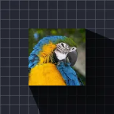

Radiale schaduw

Werpt lange schaduwen vanuit de ondoorzichtige delen van de laag, die vanaf een lichtpunt uitwaaieren.
Instellingen
| Instelling | Type | Bereik | Standaard |
|---|---|---|---|
| Licht | Punt (X, Y) | -2 tot 3 | 0.3, 0.2 |
| Lengte | Getal | 0 tot 5 | 0.25 |
| Kleur | Kleur | – | #000000 |
| Alfa | Getal | 0% tot 100% | 10% |
| Uitfaden | Getal | 0% tot 100% | 0% |
| Vulling | Getal | 0% tot 100% | 100% |
| Stijl | Keuze | Klassiek, Standaard | Klassiek |